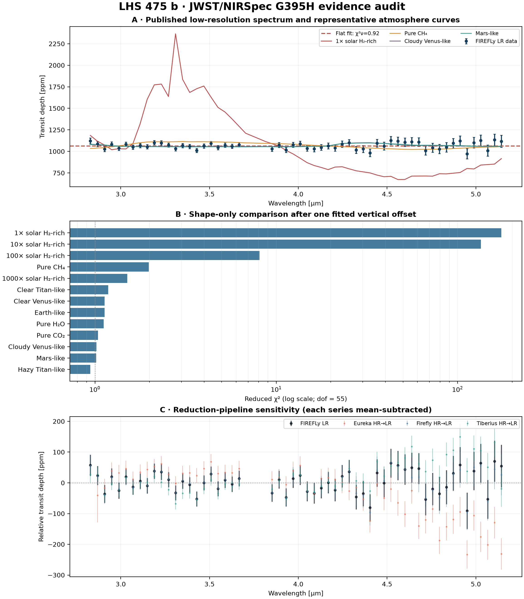

Data source notes
SHA-256, LF-normalised text
c2169052c0424a2444d28dfdbb608de3273955a513efb4b3b5def0e11f693a1eBrowse 12 versioned evidence files. Table previews simply display stored rows. Consult the project report for the source, processing steps, and inference assumptions.

c2169052c0424a2444d28dfdbb608de3273955a513efb4b3b5def0e11f693a1e1018a6944f71c1756c8148a467ce9857eb4451c6b5ba6a23cd1315af50caa07d11157c4333b28602b7c8858c14fcae17df66688cb6857d65b86996b3cea4d2394baf2964d9bc9a8b31cd18649c3d4f3a4787e6b4c9be32ca2e9fecb6d8e0f5d18a991324e527400f0692bbec4e2ba16b4250bd8917e635c7cc24ba63de29db5bb35a3150e8c2c6aa51234e3c9575b9c1fc0f0c6a9419603721843bc2816ad9597132cd40cfafbc81170d216690df62366419c185d3a40f0127e26c9f988718a2145c578d2cd0991769941e226274f5ea61e6ea790c5ca5841f8b83753abdb74e| quantity | value | unit |
|---|---|---|
| n_wavelength_points | 56 | count |
| flat_line_level | 0.001063407848942883 | fractional/chi-square as applicable |
| flat_line_level_error | 4.321995311377846e-06 | fractional/chi-square as applicable |
| flat_line_chi2 | 50.700149631285626 | fractional/chi-square as applicable |
69ef0e06216a73d148770316463136b6e3a88f3528e2e502c2a194160d5ee9d3| model | fixed_chi2 | fixed_dof | fixed_reduced_chi2 | fixed_p_value | offset | offset_error |
|---|---|---|---|---|---|---|
| 1000× solar H₂-rich | 83.48361065777233 | 56 | 1.4907787617459345 | 0.010057880006844388 | -3.297319354668156e-06 | 4.321995311377846e-06 |
| 100× solar H₂-rich | 498.5378167998109 | 56 | 8.902461014282338 | 2.927515919294496e-72 | -3.157563787559681e-05 | 4.321995311377846e-06 |
| 10× solar H₂-rich | 8942.198946574466 | 56 | 159.6821240459726 | 0.0 | -0.00016944444486112243 | 4.321995311377846e-06 |
| 1× solar H₂-rich | 11541.077727842912 | 56 | 206.09067371148058 | 0.0 | -0.0001909018005183625 | 4.321995311377846e-06 |
9fc25de317263de2e4d97a2f0f909fd67d3d77db4f1be2a503e4a854217fe236| pipeline | n_bins | mean_depth | median_formal_error | flat_chi2 | flat_dof | flat_reduced_chi2 |
|---|---|---|---|---|---|---|
| Eureka | 55 | 0.0010025099925643805 | 3.120334288398717e-05 | 227.83452703935382 | 54 | 4.219157908136181 |
| Firefly | 56 | 0.0010619764317453602 | 3.322287845961553e-05 | 49.803596941325054 | 55 | 0.9055199443877282 |
| Tiberius | 56 | 0.0010265075042469876 | 2.3234101561514422e-05 | 151.54039343573567 | 55 | 2.755279880649739 |
a13cd34ca133d2d833e9a3612f9394bbd1f0f93490e537ba7f28e9ea5fd14d28e5fa4cf539111ad23612572c0c75e39b1e8e1564a10d6176c4a47cef72b0ceb4SHA-256 values verify the stored files. They do not independently validate the scientific analysis. Rebuild this page with python scripts/evidence_catalog.py followed by python scripts/render_evidence_page.py.